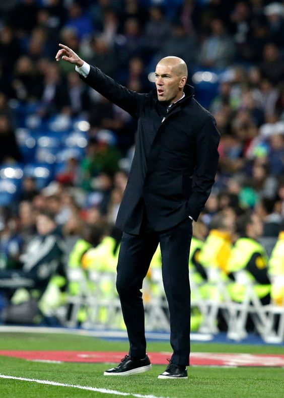

Coach -
Zinedine Zidane :

Zinedine Zidane
Being a former Real Madrid legend , the frenchman has a terrific counterattacking formation
along with a high pressing solid defence.
His strategies lead to the numerous number of trophies he won as a manager of the Los Blancos
within a short spam of time.
Formation -
4-3-3
- Attacking Style - Counterattack - Wide.
- Passing - Short Pass.
- Defensive style - Frontline Pressure - High pressing.
My line up -
Main Squad -
- Courtois(GK)
- Marcelo(LB)
- Ramos(c)(CB)
- Varane(CB)
- Carvajal(RB)
- Casemiro(CDM)
- Kroos(CM)
- Modric(CM)
- Hazard(LWF)
- Bale(RWF)
- Benzema(CF)
Substitution -
- Areola(GK)
- Asensio(LMF)
- Valverde(CMF)
- Vasquez(RWF)
- Militao(CB)
- Ferland Mendy(LB)
- Isco(AMF)
Titles won under Zidane -
Real , under Zidane , has won 3 Champions Leagues, 2 Club World Cups, 2 European Super Cups,
2 Spanish Leagues and 2 Spanish Super Cups.
The last trophy was La Liga Champions 2019-2020.

La Liga Champions 2019-2020